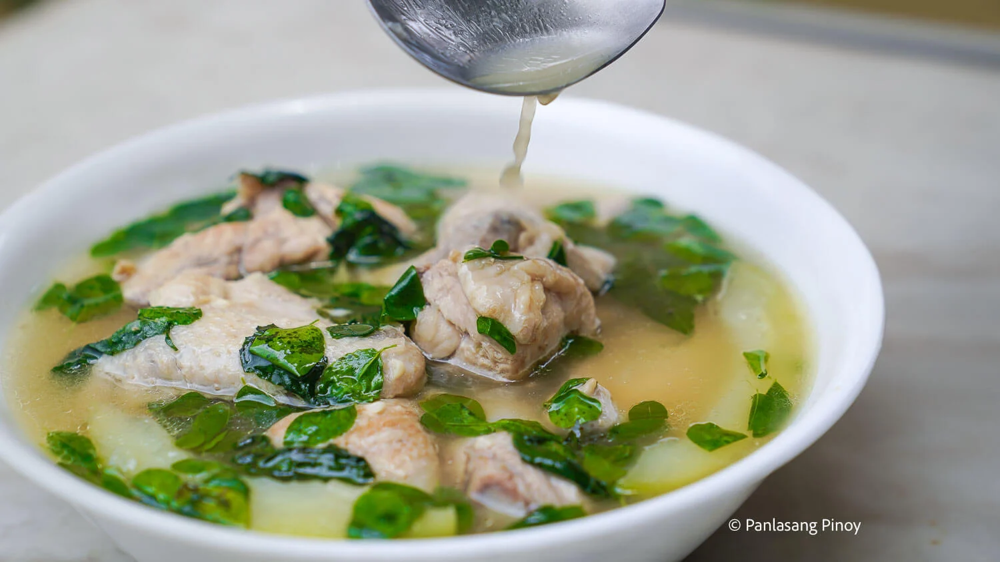

Chicken Tinola
A comforting Filipino soup made with chicken, green papaya, and chili leaves simmered in a savory ginger broth.
This hearty dish is perfect for warming up on a chilly day and is often enjoyed with a rice and a condiment of fish sauce and chili pepper on the side.

Ingredients
- 3 lbs. chicken
- 2 green papaya
- 1 1/2 cup malunggay leaves
- 1 cup hot pepper leaves
- 5 cloves garlic
- 1 onion
- 3 thumbs ginger
- 2 Maggi Magic Chicken Cubes
- 1 quart rice wash
- 1 quart water
- 2 tablespoons fish sauce
- Ground black pepper to taste
- 3 tablespoons cooking oil
Instructions
- Heat cooking oil in a cooking pot. Sauté garlic, onion, and ginger until the onion softens.
- Add the chicken. Continue sautéing for 2 minutes or until it turns light brown in color.
- Pour 2 tablespoons of fish sauce. Stir.
- Add the rice wash into the cooking pot. Let it boil. Simmer for 10 minutes.
- Add water as needed. Let it boil.
- Put the green papaya wedges into the pot. Continue to simmer for 15 to 20 minutes.
- Add Maggi Magic Chicken Cubes. Stir. Season with ground black pepper (this is optional).
Turn off the heat and then add the hot pepper leaves and malunggay leaves into the cooking pot.
Cover for 2 minutes to let the residual heat cook the green veggies.
- Transfer to a serving bowl. Serve. Share and enjoy!
Source of Recipe:©Panlasang Pinoy